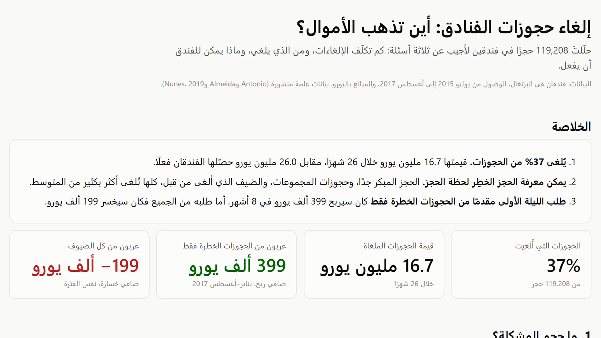

أوقف خسارة الأموال بسبب إلغاء حجوزات الفنادق
حلّلت 119 ألف حجز فندقي لأعرف كم تكلّف الإلغاءات، ومن الذي يلغي، وماذا يجب أن يفعل الفندق.
- دوري
- بنيت المشروع بالكامل، من البيانات الخام حتى التوصية ولوحة المتابعة.

399 ألف €
ربح عند طلب العربون من الحجوزات الخطرة فقط
8 أشهر من 2017، فترة لم يرها النموذج
−199 ألف €
خسارة عند طلبه من كل الضيوف بدلًا من ذلك
37%
من الحجوزات تُلغى
0
أخطاء في 28 فحصًا تلقائيًا للبيانات
المشكلة
يُلغى أكثر من ثلث حجوزات الفنادق. وطالما الحجز قائم لا يستطيع الفندق بيع الغرفة لأحد آخر، فقد يتركها الإلغاء فارغة. في الفندقين في هذه البيانات، بلغت قيمة الحجوزات الملغاة 16.7 مليون يورو خلال 26 شهرًا. طلب عربون من كل الضيوف يبدو حلًا، لكن كثيرًا منهم يحجزون عندها في مكان آخر. يحتاج الفندق أن يعرف من يطلب منه العربون.
كيف يعمل
الخطوة 1 / 5
مراجعة البيانات
28 فحصًا تلقائيًا تتأكد أنه لا يضيع حجز ولا يُحسب يورو مرتين. والأخطاء الواضحة، مثل ليلة بسعر 5,400 يورو، تُستبعد وتُوثَّق.
الخطوة 2 / 5
معرفة من يلغي
الحجوزات قبل الوصول بسنة تُلغى بنسبة 68%، والحجوزات في آخر أسبوع بنسبة 10%. والضيف الذي ألغى من قبل يلغي مرة أخرى بنسبة 92%.
الخطوة 3 / 5
تقييم كل حجز
يعطي النموذج كل حجز جديد درجة خطر من 0% إلى 100%، باستخدام ما يعرفه الفندق لحظة الحجز فقط.
الخطوة 4 / 5
اختبار القاعدة
القاعدة: إذا كانت درجة الخطر 26% أو أكثر، اطلب الليلة الأولى مقدمًا. اختُبرت القاعدة على حجوزات 2017 تحت 12 احتمالًا مختلفًا.
الخطوة 5 / 5
عرض النتيجة
لوحة متابعة بالعربية والإنجليزية. كل رقم فيها ناتج من البيانات، وخلف كل رسم جدول بالأرقام.
النتائج
مُختبر على حجوزات يناير–أغسطس 2017 · أكتوبر 2026
- طلب الليلة الأولى من أخطر 45% فقط من الحجوزات كان سيربح 399 ألف يورو في ثمانية أشهر. أما طلبه من كل الضيوف فكان سيخسر 199 ألف يورو.
- القاعدة تربح في كل الاحتمالات الـ 12 المُختبرة، من 147 ألفًا إلى 1.2 مليون يورو.
- يتوقع النموذج عدد الإلغاءات كل أسبوع بمتوسط خطأ 9%. تستخدم الفنادق هذا الرقم لتقرر كم غرفة إضافية يمكنها بيعها بأمان.
- يصيب النموذج 78 مرة من كل 100 في حجوزات لم يرها. تحليلات منشورة كثيرة على هذه البيانات تذكر 95–99% لأنها تستخدم معلومات لا توجد إلا بعد وصول الضيف. هذا المشروع يقيس هذا الفرق.
كيف يفيد هذا شركتك
اطلب من الضيوف المناسبين
عربون فقط حيث الخطر مرتفع، فتحتفظ بالضيوف الذين كانوا سيحضرون.
خطّط للحجز الزائد على رقم
الإلغاءات المتوقعة لكل أسبوع ولكل فندق، من الحجوزات الموجودة لديك.
أرقام يمكنك الدفاع عنها
كل رقم مُراجَع آليًا، فترى المالية والتشغيل نفس الأرقام.
الفنادق ووكالات السفر والعيادات وقاعات المناسبات وتأجير السيارات — أي نشاط يحجز مكانًا لعميل قد لا يحضر.
من المهم أن تعرف
- البيانات عامة — فندقان في البرتغال بين 2015 و2017، باليورو. الطريقة تصلح لأي نشاط مشابه، أما الأرقام فتُحسب من بيانات كل نشاط.
- عدد الضيوف الذين يرفضون العربون افتراض، لأن البيانات لا تُظهره. لذلك عُرضت النتائج تحت 12 احتمالًا. قبل التطبيق الكامل، جرّب القاعدة على جزء من الحجوزات أولًا.
الصور
التفاصيل التقنيةللمهندسين ومسؤولي التوظيف
- Python
- SQL
- dbt
- DuckDB
- LightGBM
- scikit-learn
- Plotly
- pytest
- مستودع dbt على DuckDB (طبقات staging وfacts وmarts) مع 28 اختبار بيانات، منها اختبارات مطابقة: كل صف أصلي إما محفوظ أو مستبعد بقاعدة مسمّاة، والإيرادات متطابقة حتى السنت بالحجز وبالليلة وبالشهر.
- تدقيق التسريب: الأعمدة التي تُملأ بعد الحجز (المواقف، والغرفة المخصصة، وتعديلات الحجز، والدولة المصححة) مستبعدة. تضخّم النتيجة بسببها وبسبب التقسيم العشوائي مُقاس ومنشور (77.6% صادقة مقابل 88.7%).
- تقييم شهري متتابع (walk-forward): كل شهر في 2017 يقيّمه نموذج LightGBM أُعيد تدريبه على كل الوصولات السابقة. ROC AUC بقيمة 0.850، وBrier بقيمة 0.150، مع فحص المعايرة لكل شريحة خطر.
- اختبار السياسة تاريخيًا: الحد اختير على سبتمبر–ديسمبر 2016 وطُبّق دون تغيير على 2017، مع شبكة حساسية لنسب الرفض وإعادة البيع. أمر واحد يعيد بناء كل شيء في حوالي دقيقتين على لابتوب.
لنتحدث عن مشروعك
أخبرني بما تحاول إصلاحه أو معرفته. سأرد عليك بخطة واضحة: الخطوات، والمدة، وتكلفة التشغيل.